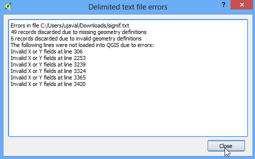
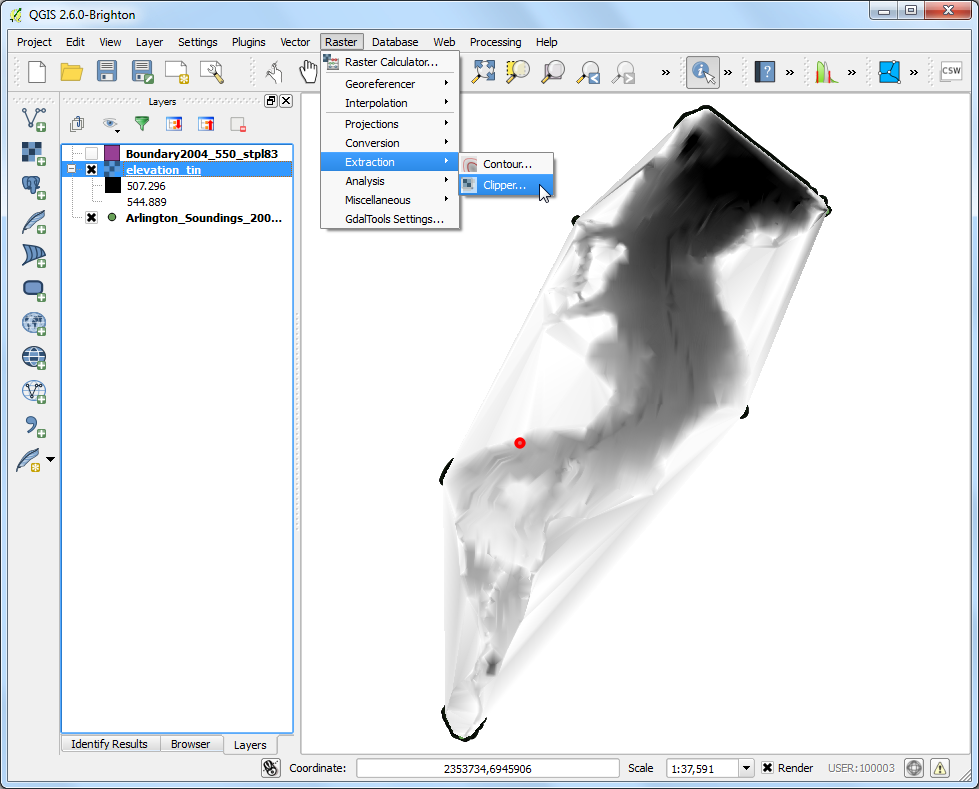

Noțiuni de bază despre programarea în Python
[ Download PDF A4 Letter ]
QGIS are o interfață de programare puternică, care vă îngăduie să extindeți funcționalitatea de bază a aplicației, precum și să scrieți script-uri pentru automatizarea sarcinilor. QGIS suportă limbajul de scripting popular, Python. Chiar dacă sunteți un începător, învățarea unor noțiuni despre Python și despre interfața de programare a QGIS vă permite să fiți mult mai productivi în munca dvs. Acest tutorial nu necesită cunoștințe de programare prealabile, având scopul de a oferi o introducere în scriptarea Python, în cadrul QGIS (PyQGIS).
Privire de ansamblu asupra activității
Vom încărca un strat vectorial de tip punct, reprezentând toate aeroporturile majore, folosind scriptarea Python pentru a crea un fișier text cu numele, codul, latitudinea și longitudinea pentru fiecare dintre aeroporturile stratului.
Procedura
În QGIS, mergeți la . Navigați la fișierul descărcat ne_10m_airports.zip și faceți clic pe Open. Selectați stratul ne_10m_airports.shp și faceți clic pe OK.

Veți vedea stratul ne_10m_airports încărcat în QGIS.

Selectați instrumentul Identify și faceți clic pe oricare dintre puncte, pentru a examina atributele disponibile. Veți vedea că numele aeroportului, precum și codul de 3 cifre al acestuia, sunt conținute în atributele name, respectiv iata_code.

QGIS oferă o consolă încorporată, în care puteți introduce comenzi Python și să obțineți rezultatul. Această consolă este foarte bună pentru a învăța scriptarea și, de asemenea, pentru a procesa rapid datele. Deschideți Python Console din .

Veți vedea un nou panou, deschis în partea de jos a suportului de hărți al QGIS. Veți vedea un prompt cum ar fi >>>, în care aveți posibilitatea să tastați comenzi. Interacțiunea cu mediul QGIS, se face folosind variabila iface. Pentru a accesa stratul din QGIS, activ în mod curent, aveți posibilitatea să tastați următoarele, apoi să apăsați Enter. Această comandă obține referința către stratul încărcat și o stochează în variabila layer.
layer = iface.activeLayer()

Există în Python o funcție utilă, numită dir(), care afișează toate metodele disponibile pentru orice obiect. Acest lucru este folositor atunci când nu știți precis care funcții sunt disponibile pentru un anumit obiect. Executați următoarea comandă pentru a vedea ce operații putem executa cu variabila layer.

Veți vedea o listă lungă de funcții disponibile. Pentru moment, vom folosi o funcție numită getFeatures(), care va obține referința către toate entitățile unui strat. În cazul nostru, fiecare entitate va fi un punct, reprezentând un aeroport. Puteți tasta următoarea comandă, pentru a parcurge fiecare dintre entitățile stratului curent. Asigurați-vă că ați adăugat 2 spații, înainte de a introduce a doua linie.
for f in layer.getFeatures():
print f

După cum veți vedea în rezultat, fiecare linie conține o referire la o entitate din cadrul stratului. Referința către entitate este stocată în variabila f`. Putem folosi variabila f` pentru a accesa atributele fiecărei entități. Introduceți următoarele, pentru a obține name și iata_code pentru fiecare entitate de tip aeroport.
for f in layer.getFeatures():
print f['name'], f['iata_code']

Deci, acum știți cum să accesați programatic atributul fiecărei entități dintr-un strat. În continuare, să vedem cum putem accesa coordonatele entităților. Coordonatele unei entități vectoriale pot fi accesate prin apelarea funcției geometry(). Această funcție returnează un obiect de tip geometrie, pe care îl putem stoca în variabila geom. Puteți rula funcția asPoint() pe obiectul respectiv, pentru a obține coordonatele x și y ale punctului. În cazul în care entitatea este o linie sau un poligon, puteți folosi funcțiile asPolyline() sau asPolygon(). Introduceți următorul cod în linia de comandă și apăsați Enter, pentru a vedea coordonatele x și y ale fiecărei entități.
for f in layer.getFeatures():
geom = f.geometry()
print geom.asPoint()

Cum procedăm dacă vrem să obținem numai coordonata x a entității? Vom apela funcția x() pentru obiectul punct, și îi vom obține coordonata x.
for f in layer.getFeatures():
geom = f.geometry()
print geom.asPoint().x()

Acum avem toate piesele, pe care le putem îmbina pentru a genera rezultatul dorit. Introduceți codul de mai jos pentru a obține numele, iata_code, latitudinea și longitudinea fiecăreia dintre entitățile aeroport. Notațiile %s and %f sunt moduri de a formata șirurile și variabilele numerice.
for f in layer.getFeatures():
geom = f.geometry()
print '%s, %s, %f, %f' % (f['name'], f['iata_code'],
geom.asPoint().y(), geom.asPoint().x())

Puteți vedea rezultatul afișat în consolă. Un mod mai util de a stoca rezultatul ar fi un fișier. Puteți tasta codul de mai jos, pentru a crea un fișier în care veți înregistra rezultatul. Înlocuiți calea fișierului cu cea de pe sistemul propriu. Rețineți că vom adăuga \n în încheierea formatării liniei noastre. În acest mod, se va trece la o linie nouă, după adăugarea datelor pentru o entitate. De asemenea, trebuie să rețineți linia unicode_line = line.encode('utf-8'). Deoarece stratul nostru conține unele entități cu caractere Unicode, nu putem face o simplă scriere într-un fișier text. Vom codifica textul folosind codificarea UTF-8 și apoi îl vom scrie în fișierul text.
output_file = open('c:/Users/Ujaval/Desktop/airports.txt', 'w')
for f in layer.getFeatures():
geom = f.geometry()
line = '%s, %s, %f, %f\n' % (f['name'], f['iata_code'],
geom.asPoint().y(), geom.asPoint().x())
unicode_line = line.encode('utf-8')
output_file.write(unicode_line)
output_file.close()

Puteți merge la locația fișierului de ieșire specificat, pentru a deschide fișierul text. Veți vedea datele din fișierul shape de aeroporturi, pe care le-am extras folosind scriptarea Python.